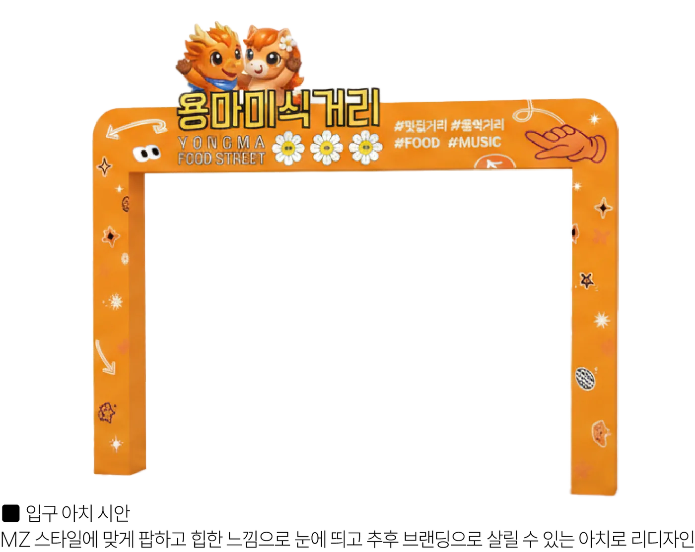
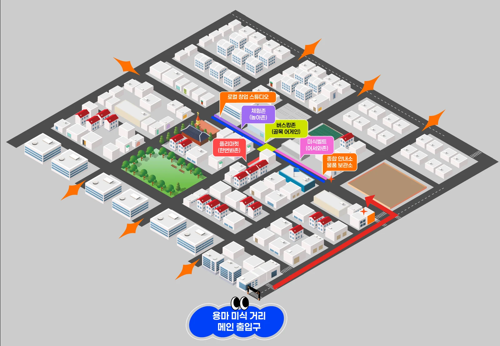
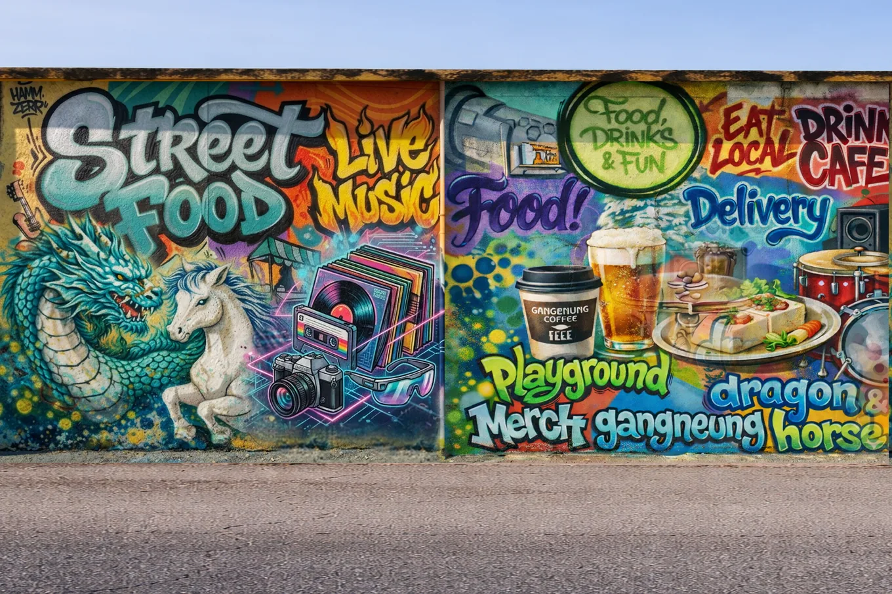
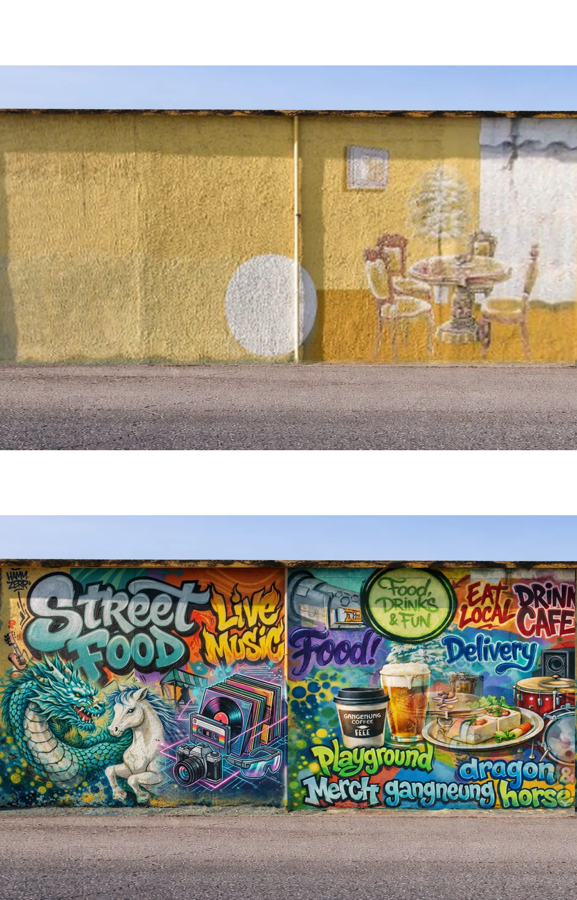

진입 아치 리모델링
노후 아치를 교체하고 브랜드를 적용, 야간 감성조명으로 랜드마크화합니다.
입구에서 짐을 맡기고 → 향토음식을 맛보고 → 버스킹을 듣고 → 사진을 남기고 → 체험하고 → 창업으로 이어지는 하나의 동선으로 설계했습니다.


KTX 여행객의 상권 진입 장벽을 없애는 거점입니다.
상인회 사무실을 활용하며, 사업 종료 후에도 상인회가 직접 운영합니다.


농식품부 K-미식벨트와 연계한 강릉 향토음식 특화 구간입니다.
버스킹·DJ 음악다방 통합 총 15회. 집객의 핵심 앵커입니다.
인디밴드·어쿠스틱·보컬·댄스·국악 크로스오버
피크타임에는 무인 거리노래방으로 운영


강릉 로컬 작가와 함께 만드는 레트로 스토리텔링 벽화 3개소.
연령대와 국적에 상관없이 머물 수 있는 체험·참여 공간입니다.
| 향토음식 체험 | 감자옹심이·한과 만들기 + 강릉커피 로스팅 |
|---|---|
| 강릉 예술인존 | 로컬 작가 작품 전시·판매·라이브 퍼포먼스 |
| 게임존 | 인형뽑기 등 가족·청년층 체류 콘텐츠 |
| 외국인 체험 | 향토음식 체험 + 영문 인증서 발급 + 다국어 안내 |
| 공예·캘리그라피 | 계절 특화 체험 프로그램 |


브랜드부터 조명, 쉼터까지. 골목 전체의 인상을 함께 정비합니다.

노후 아치를 교체하고 브랜드를 적용, 야간 감성조명으로 랜드마크화합니다.

차 없는 거리 가장자리 300m에 파라솔·난방설비·몽골텐트를 임차 운영합니다.

스트링라이트·포인트 조명·바닥 유도조명과 야외 음향 시스템을 설치합니다.

브랜드명·슬로건·CI와 사인·간판·홍보물 적용 매뉴얼, 다국어 홈페이지를 제작합니다.